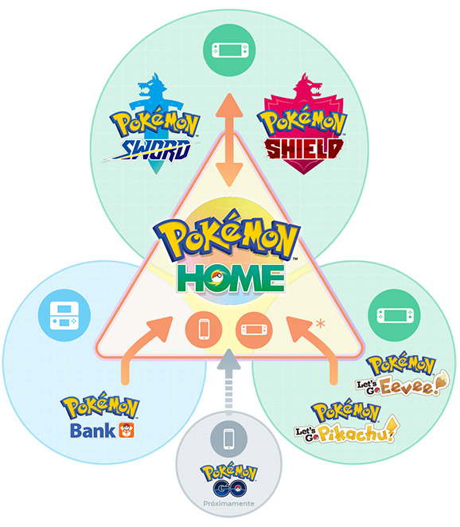
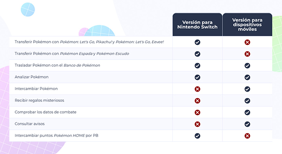
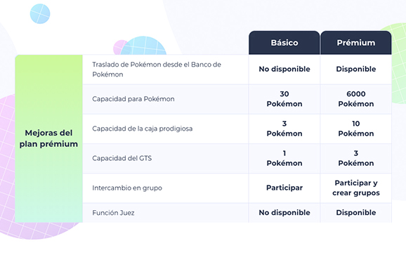

Pokémon HOME es un servicio que te permitirá tener a todos los Pokémon de tu colección en un solo sitio. Este programa diseñado para Nintendo Switch, y también disponible como app para dispositivos móviles compatibles, te permite almacenar tus Pokémon de distintos juegos de la serie Pokémon. ¡También te permite intercambiar tus Pokémon de varias maneras con gente de todo el mundo!
Puedes transferir tus Pokémon de juegos Pokémon recientes a Pokémon HOME y llevarlos a otros juegos con los que sean compatibles. En su lanzamiento, Pokémon HOME será compatible con los videojuegos de Nintendo Switch Pokémon Sword, Pokémon Shield, Pokémon: Let's Go, Pikachu!, Pokémon: Let's Go, Eevee!, así como con el Pokémon Bank en sistemas Nintendo 3DS. También hay planes de que sea compatible con Pokémon GO en el futuro.
Es posible que haya restricciones a la hora de transferir ciertos Pokémon. Sólo los juegos de Pokémon para Nintendo Switch serán compatibles con la versión de Pokémon HOME para Nintendo Switch.
Existen cuatro formas de intercambiar Pokémon en Pokémon HOME usando un dispositivo móvil compatible. A partir de ahora, podrás intercambiar Pokémon donde quieras y cuando quieras.
En la versión para dispositivos móviles, puedes ver mucho más que las entradas de la Pokédex. ¡También puedes comprobar las habilidades y los movimientos que cada Pokémon puede aprender!
Puedes recibir regalos misteriosos en la versión para dispositivos móviles de Pokémon HOME. ¡Gracias a esta función, puedes recibir regalos misteriosos de Pokémon Sword y Pokémon Shield! Los Pokémon que recibas en Pokémon HOME se pueden guardar automáticamente en una de las cajas.
También puedes obtener regalos, como objetos, mediante un código o contraseña de Pokémon Home que ingresas en Pokémon Sword o Pokémon Shield.
En Pokémon HOME encontrarás muchas más funciones para conectar tus juegos de la serie Pokémon. En la vista global, podrás ver los Pokémon que hayas depositado en Pokémon HOME, así como sus habilidades y movimientos. Con el plan prémium de pago podrás acceder a la función Juez.
Con el plan prémium de pago, se añadirán algunas funciones y otras se ampliarán.
Algunas funciones podrían no estar disponibles para todos los usuarios de conformidad con los Términos de Uso y Aviso de Privacidad de Pokémon HOME.
¡Visita el sitio web oficial de Pokémon HOME para conocer los detalles! Apple y el logotipo de Apple son marcas comerciales de Apple Inc., registradas en EE. UU. y otros países. App Store es una marca de servicio de Apple Inc. Android, Google Play y el logotipo de Google Play son marcas comerciales de Google Inc.